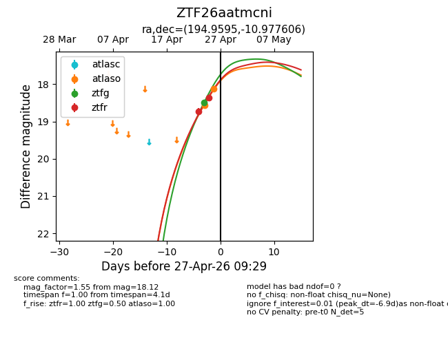
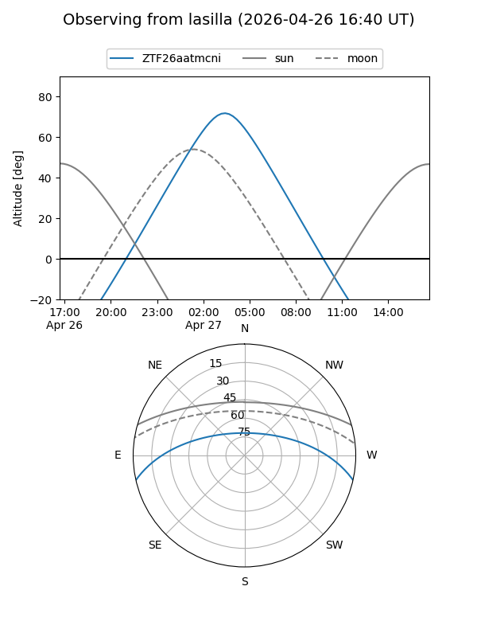
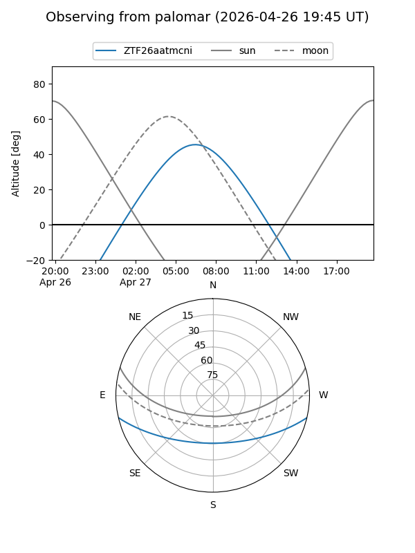
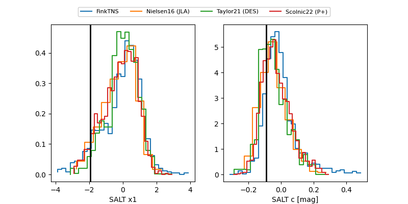

ZTF26aatmcni
Target ZTF26aatmcni at 2026-04-27 09:30
Aliases and brokers:
FINK: link
Lasair: link
ALeRCE: link
alt names
ZTF26aatmcni (ztf,fink_ztf)
Coordinates:
equatorial (ra, dec) = 194.9595,-10.97761
equatorial (HMS+DMS) = 12:59:50.28,-10:58:39.38
galactic (l, b) = (306.2697,+51.83969)
Flags:
Photometry:
last atlaso=18.12, ztfg=18.50, ztfr=18.36
2 atlaso, 1 ztfg, 2 ztfr detections
Lightcurve

Visibility


Additional plots
